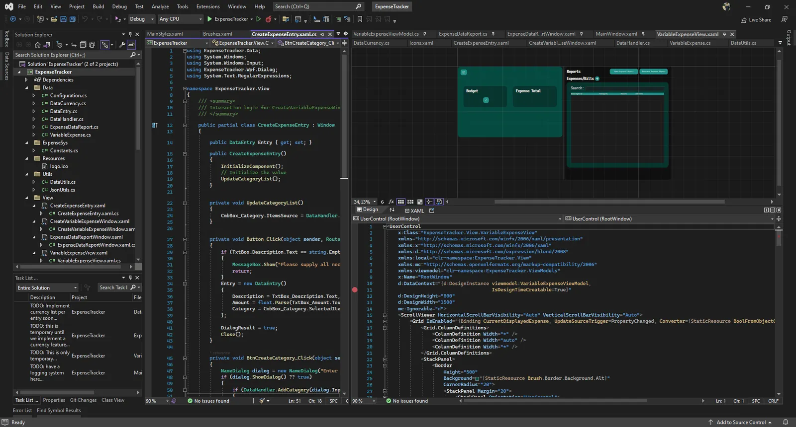
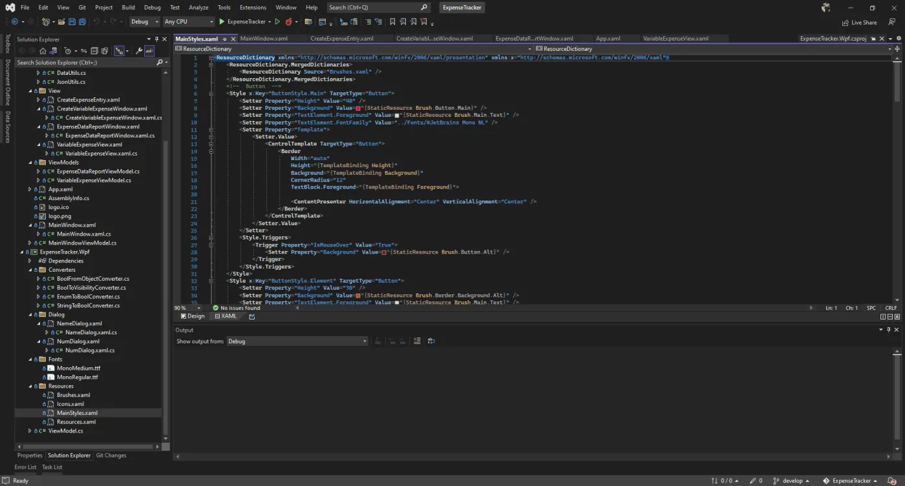
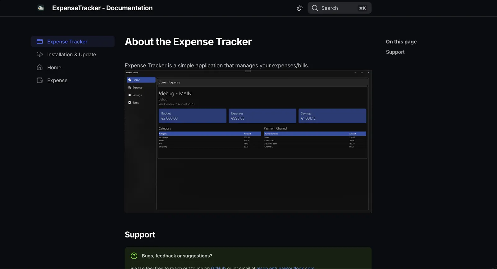

C#
I decided to push through C# because I still want to enjoy all the tool it provides and so I could also learn more about the new version of it. It's a pretty easy language to learn if you come from C-based languages like C/C++ or Java.

A WPF/.NET application I'm creating to meet my own needs, based on my experience handling bills and payments. It supports multi-currency conversion and a main currency that you wish to pay/use. I'm trying to build it from scratch using my own libraries and implementation.
I decided to push through C# because I still want to enjoy all the tool it provides and so I could also learn more about the new version of it. It's a pretty easy language to learn if you come from C-based languages like C/C++ or Java.
I fell in love with how WPF is easy to grasp and learn. If you are familiar with XML and HTML then it wouldn't be a problem for you to use. Although it's mostly for Windows, I'm fine with it because I usually use Windows as my daily driver for all my dev projects.
The main goal why I decided to make the code available is to share my ideas and approach in building my own WPF Application and Libraries. Also, I want to share that WPF is a great tool to use especially when creating your own applications.
Implementing my first attempt on realtime currency conversion that let's you add in multiple expenses in different currencies and converts into your main currency.
With the new Piggy Bank feature, you can start tracking your savings for something you want to purchase or save up for like an appliance, gadget, and other things. It supports different currencies if you are saving up for something different.

Trying to implement my own libraries from the ground up and trying to make them as useful for my future projects.
This is a library that contains mostly the things you need in WPF development, like ViewModels, Styles, Resources, and Converters.
The goal of this library is to have as many resources and utilities to reuse within the application.

Feel free to learn how to use the tool and also provide feedback on how to properly document the experience of the tool.